|
|
|||
|
|
|||
|
|
|
|
|
|
LAB-5205: Developing JFC/Swing Applications using the NetBeansTM 4.1 IDE
Expected duration: 90 minutes
Java Rich clients are making a comeback! If you are building an application that requires more than simple user interaction or data representation, rich GUIs are a more suitable development medium. The barriers that used to exist around installation and deployment have been overcome with Java Web Start technology, so there is no reason to limit your applications to thin client techologies.
NetBeansTM is the best open source IDE for developing portable JFC/Swing applications. You can now use the feature-rich NetBeansTM 4.1 IDE to design, develop, debug and deploy compelling applications. Come to this lab to experience first-hand what the buzz is about.
We will walk you through using NetBeansTM to build an ImageBrowser application with basic functionality like those image viewers that are shipped with digital cameras (and wild dreams of emulating PicasaTM). The GUI uses widgets like tables, scroll panes, split panes, combo boxes, text boxes and buttons. You will also be familiarized with layout managers, handling events, code refactoring and using custom models. We believe you will be impressed by what you can build so quickly.
Participant Prerequisites
Some Java programming experience
Minimal experience developing GUIs with or without an IDE (with no GUI development experience, you can still complete the lab but it will probably take longer than 90 minutes)
System requirement
Supported OS: Solaris 8/9/10, Linux, OS X 10.4, Windows
Memory requirement: 512MB minimum (OS X 1GB recommended)
Disk space requirement: 300MB
Download and install Java 2 Platform Standard Edition 5.0
The latest version is "JDK 5.0 Update 3" or later (the lab was developed on update 3)
For Apple's OS X version 10.4 (aka Tiger) , install Java 2 SE 5 Release 1
Download and install NetBeans 4.1
During NetBeans 4.1 installation, make sure to select JDK 1.5 if prompted to choose between several VM instances
Optional: Download and install J2SE 5.0 Documentation
Notation used in this documentation
<JAVA_HOME> is the installation directory of J2SE 5.0 SDK
<LAB_ROOT> is the directory under which you have unzipped the lab zip file of this hands-on lab
The name of the lab zip file of this hands-on lab is 5205_netbeansswing.zip.
Once you unzipped the lab zip file under <LAB_ROOT>, it will create a subdirectory called netbeansswing. For example, under Windows, if you have unzipped the lab zip file in the root of drive E:\, it will create the E:\netbeansswing directory. Under Linux/OS X/Solaris, if you have unzipped the lab zip file in the /home/sang directory, it will create the /home/sang/netbeansswing directory
<netbeans41_HOME> is the directory you installed NetBeans 4.1
Text in italics is background information to deepen your understanding. You can skip past it without affecting your ability to complete the lab.
NOTE: If you get stuck in any of Exercises 2 to 6, click on the Solution link at the end.
Where to send questions or feedbacks on this lab and public discussion forums:
You can send technical questions via email to the authors of this Hands-on lab (and experts on the subject) or you can post the questions to the web.
handsonlab-netbeansswing@yahoogroups.com (via email)
The example Swing application we are going to build
is a simple Image Viewer which looks like this:
1. Check that
you have JDK 1.5 installed and install it from the Software
needed links if required
On Windows, open a Command Prompt window, cd c:\"Program Files"\Java (it might be somewhere else if you didn't install it in the default location) followed by dir. You should see a directory entry called jdk1.5.0_XX where XX indicates the revision.
On Solaris, UNIX or Linux, open a terminal window, type java -fullversion. You should see the following java full version "1.5.0_XX" where the XX indicated the revision. If you have installed JDK 1.5 but are not using it as the default, go to step 4.
On OSX, you can check the /System/Library/Frameworks/JavaVM.framework/Versions directory containing a 1.5.0 directory with a 1.5 symbolic link.
2. Start the NetBeans 4.1 IDE and see if the IDE comes up
On Windows XP, Start > All Programs > NetBeans IDE 4.1 > NetBeans IDE or click the NetBeans 4.1 icon (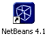) on the desktop.
On Solaris, UNIX, or Linux, open a terminal window, then type <netbeans41_HOME>/bin/netbeans
On OS X 10.4, either click on the NetBeans 4.1 icon or launch it by executing /Users/<your_userid>/Desktop/NetBeans.app/bin/netbeans (it might be somewhere else if you moved it)
3. If you have multiple JDK versions installed, check that NetBeans is using JDK 1.5.0_03 (or 1.5.0 on OS X)
From the NetBeans menu bar, select Help then About, and click on the Detail tab on the About dialog. If the Java property indicates 1.5.0_03 or equivalent then proceed to Exercise 1, otherwise you have to configure it in the next step.
|
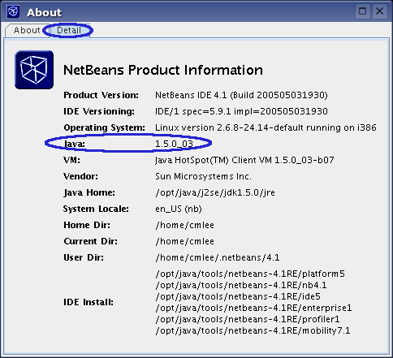 |
4. To configure JDK 1.5 as NetBeans default JDK, edit <netbeans41_HOME>/etc/netbeans.conf and add the following property:
|
netbeans_jdkhome="<JAVA_HOME>" |
Note: replace <JAVA_HOME> with the appropriate path in your system. An alternate to changing NetBean's configuration file is to launch NetBeans with '--jdkhome <JAVA_HOME>'.
Those already familiar with NetBeans 4.1 (even if not GUI development) may choose to skip to Exercise 2 after starting the IDE.
Introduction:
To
familiarize you with the NetBeans 4.1 user interface (UI), we will
walk you through the most significant windows and introduce you to
important terminology we will use later.
Steps
to follow:
1. Opening an existing project.
You should see this 'Welcome' tabbed pane when NetBeans 4.1 starts up as a result of launching NetBeans 4.1 for the very first time (Step 2 from Exercise 0). If NetBeans 4.1 has not launched or if you see something radically different, please ask for help!
|
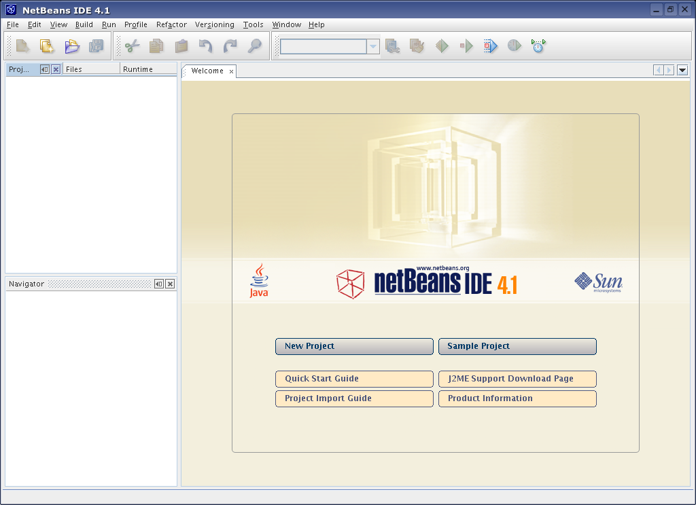 Fig 1-1: NetBeans startup screen |
In
order for you to see some meaningful content in NetBeans, you should
now open a project we have already created.
Click on File
on the menubar and select Open Project...
|
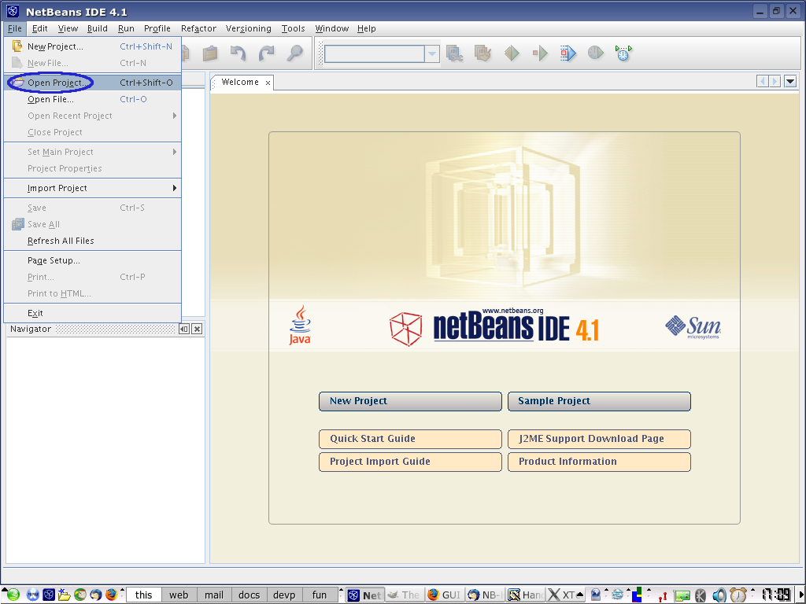 Fig 1-2: Open project menu |
Navigate
the Look in: combobox to the solution directory which
is under <LAB_ROOT>
Select exercise_7
Click
the Open Project Folder button at the bottom
|
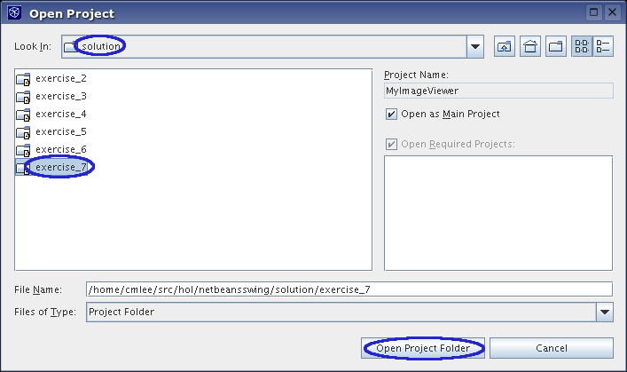 Fig 1-3: Selecting an existing project |
At
this point, don't be alarmed when you see this warning:
|
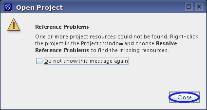 |
You can safely click Close and proceed for this
exercise.
Note: The Reference Problems warning was shown
because additional jar files can only be included to projects using
absolute paths in this version of NetBeans. The solution was built on
our own machines so the paths obviously don't correspond. If you wish
to fix this reference problem, you can take a small detour and jump
to Step 1 of Exercise 7 .
The instructions there can link you right back here but this is
not unnecessary at this point. If you eventually find time to do
the extra credit Exercise 7, we will guide you past it anyway.
The
highlighted window is the Project window. There should be a
solitary project there labelled MyImageViewer.
|
Fig 1-4: Project opened and displayed in Project Window |
2. Examining project components
Click on the node expansion glyphs ( on Solaris/Linux, on Windows) to expand the following nodes: MyImageViewer, Source Packages and j1viewer
When a node is expanded, the glyphs should change to on Solaris/Linux and on Windows.
Click on the ThemeSelectionBean.java text
The
highlighted Navigator window should now be populated
with ThemeSelectionBean's methods.
You can try changing the
combobox showing Members View to show the Inheritance
View.
|
Fig 1-5: Expanding the project node to select a component |
3. The Design view, Inspector and Palette windows.
Double-click on ThemeSelectionBean.java and a new tabbed panel showing the Design view will appear.
Notice
on the left that the Inspector window (highlighted
in red) has now taken the place where the Navigator
window used to be. It shows the UI component hierarchy and allows
you to select a particular component to edit.
Notice the Palette
window (highlighted in blue) on the
right. Its purpose is for you to select which UI components you want
to add to the design.
|
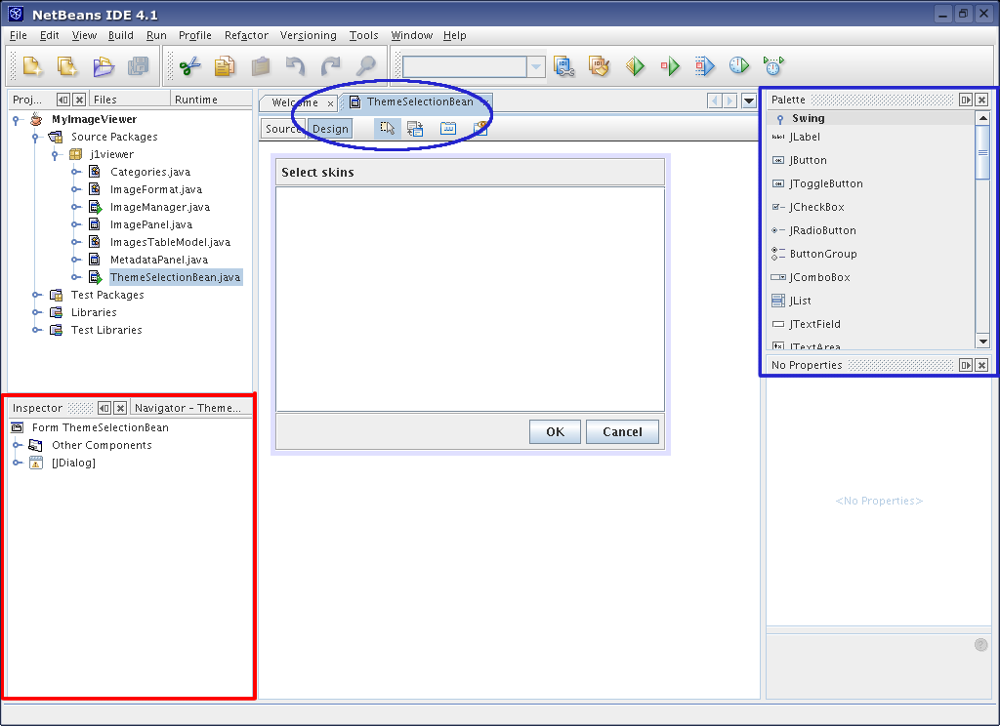 Fig 1-6: Viewing a Swing UI component |
4. The Properties window
Click in the middle of the highlighted panel with the label Select skins on it
The
Properties window (highlighted) at the bottom right
will be populated with the panel's properties, most of which are
editable.
The Properties button at the top left
of the Properties window also shows a deeper hue
indicating that it is the active mode. You can try clicking on the
Events button to show what events have listeners for this
panel, or the Code button to see if there is any custom code.
|
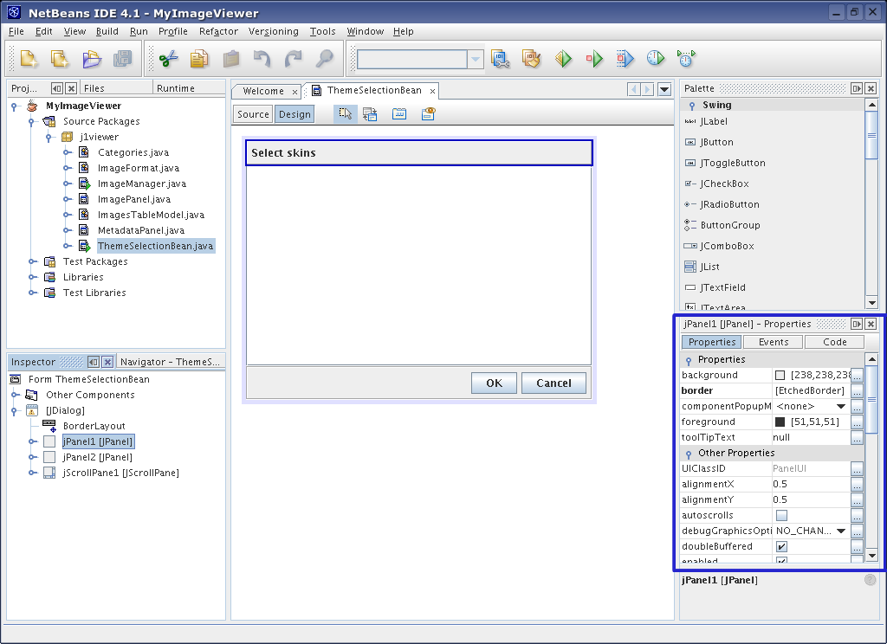 Fig 1-7: Viewing component properties |
5. Examining Source code
Click on the Source button to view the Java source code for ThemeSelectionBean.
Try clicking on the minus () signs to collapse code fragments, you will see the glyphs change to plus () signs and the code will be reduced to short snippets with a trailing box containing ellipses (). When you move your pointer over the , all the collapsed code will appear in a tooltip until you move the pointer away.
Also
try moving the mouse over the screwdriver icon (),
a tooltip telling you which interface the method helps to
implement.
And later on when you see upward-facing arrows (),
mousing over them will show which ancestral class this method
overrides.
|
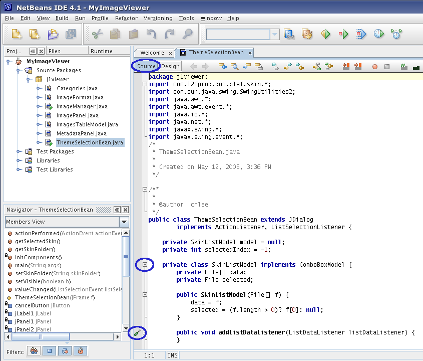 Fig 1-8: Viewing a component's source code |
Now that you've taken
the 5 minute tour of NetBeans, let's get going!
Back in the
Project window, pull down the menu on the MyImageViewer
node and select Close Project.
Summary:
In
this exercise, you learned some basic navigation within the NetBeans
4.1 UI. You opened an existing project, expanded the Source
Packages, selected a UI component and saw its methods in the
Navigator window, double-clicked the component to edit it, saw
the Palette and Inspector windows, looked at a
component's Properties, moved between Design and Source
views, and learned how to collapse and expand code, and launch
informational tooltips.
return to
the top
Introduction:
In this exercise, you will learn how to start a new NetBeans project.
Background
information:
The first step for any application you
develop in the NetBeans development environment is to create a
project. The project contains all the files that make up the
component or application. These include source files for your pages
and the Java code they use, and resources your web application needs
such as images, style sheets, or code libraries (such as JAR files).
Many of these files are automatically created for you (in your home
directory) when you create the project for the first time. A project
can be so small that it only encompasses one Swing component, or so
large that it includes hundreds of UI screens. The decision on
appropriate project scale is left to you and your organization. Our
general advice is to keep your projects to the smallest logical
grouping of components possible. Projects are not the unit of
software reuse, we will show you how we reuse Java Beans later
on.
Steps to follow:
1. Creating a new
project
Select File from the menu bar and select New Project (shortcut Ctrl+Shift+N).
|
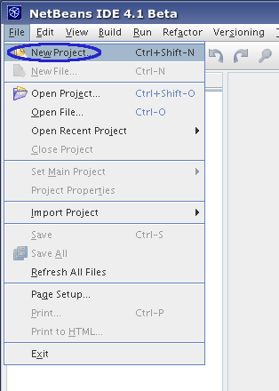 |
In the New Project window, select General (Categories) and Java Application (Projects)
Click Next.
|
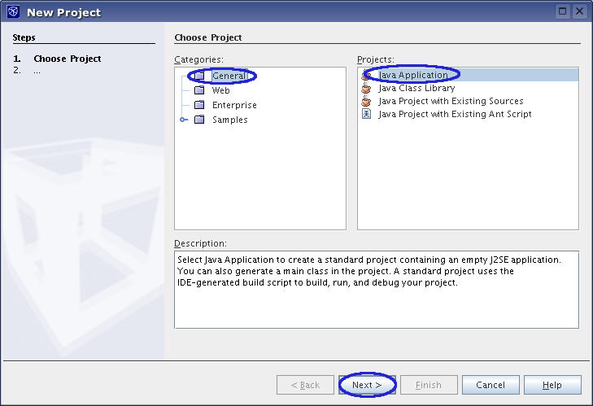 |
2. Setting up your project
Type in the name of your project in Project Name (eg. ImageViewer or MyImageViewer)
Enter an appropriate location for your project in Project Location. You can either accept the default or click on Browse to select an alternate location for your project.
Uncheck the Create Main Class checkbox. We will create the main class later.
Click Finish to accept the values.
|
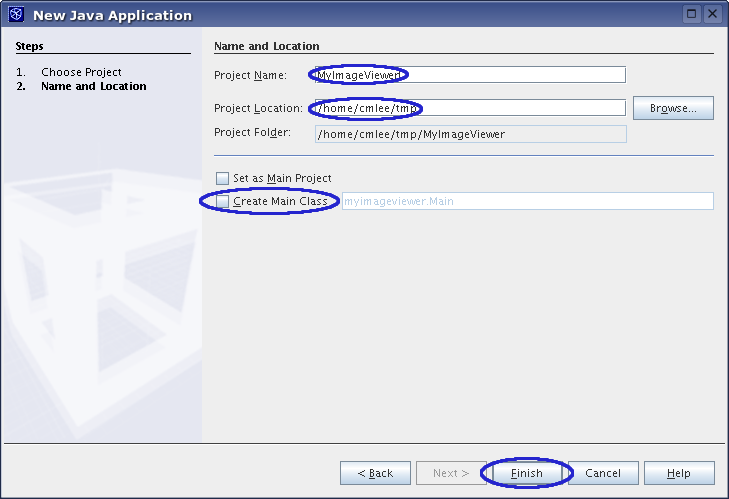 |
At this point, NetBeans will create the outline and structure of your project.
NetBeans allows you to open as many projects as you want in the Projects window. One limiting consideration would be your ability to keep track of too many open projects, and the other being unnecessary memory consumption. If you are not going to touch a project for a long time, you are advised to close it.
Expand the node labelled Source Packages.
Right click on it and select New followed by Java Package... in the cascading menu
|
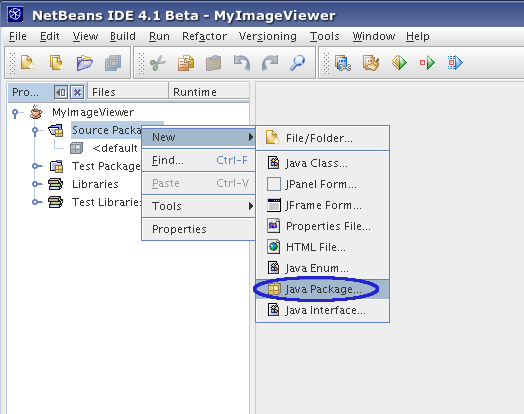 |
Type in the name of new package (we suggest using j1viewer as we will refer to it below).
|
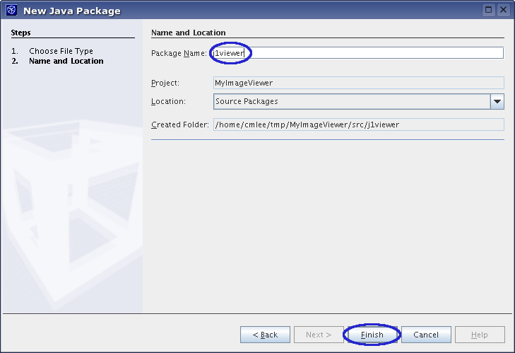 |
Click Finish
|
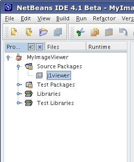 |
Summary:
You
have just created a new project, and a Java package within it called
jviewer1.
Solution
Learning goals of this exercise:
In this
exercise, you will learn how to construct GUIs using various
graphical components, and adjust their position and appearance using
layout managers and property editors.
Background
information:
The example Swing application we are
going to build is a simple Image Viewer which looks like this:
|
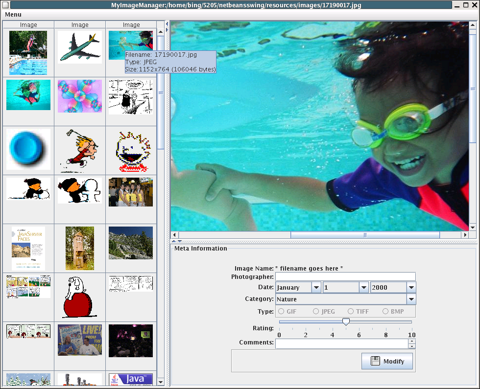 Fig 3-1: Completed Image Viewer application showing thumbnails of all images in a specified directory on the left, a selected image on the top right, and an interface for saving image metainfo on the bottom right. A tooltip (aka balloon) with some image properties should appear when you move the mouse pointer over any thumbnail on the left. |
In
this Exercise, we will now focus on creating the image metadata panel
that allows users to view and edit characteristics of an image. This
is what it should look like when completed.
|
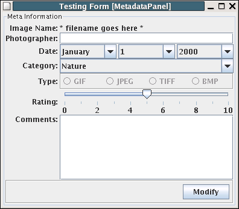 Fig 3-.2: Completed MetadataPanel |
VERY
IMPORTANT: There are 4 optional steps in this exercise
(5a, 6a, 8a
& 13a) which do not affect the
functionality of the completed application. However, if you want more
practice putting UI components together, or would like your completed
application to look exactly like the snapshots we provided, then you
should spend the time doing those optional steps.
Steps
to follow:
1. Creating a GUI
Right click on the package name (j1viewer) and select New followed by JPanel Form... in the cascading menu.
|
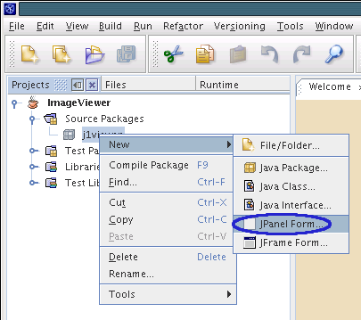 Fig 3-3: Adding a JPanel Form |
When the New JPanel Form dialog appears, type in MetadataPanel in the Class Name field
|
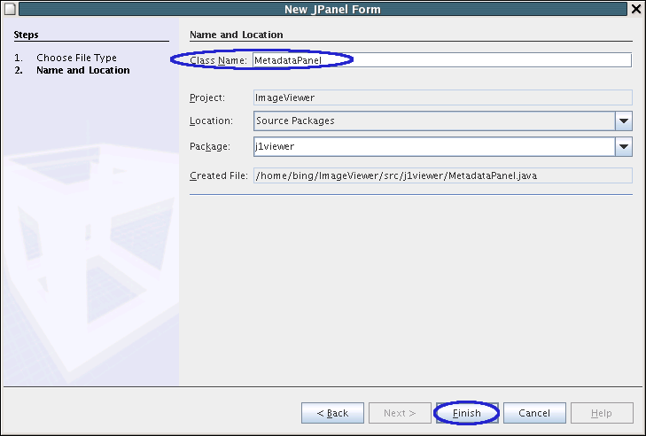 Fig 3-4: Naming the JPanel 'MetadataPanel' |
Click Finish
You have just created a JPanel called MetadataPanel.
We didn't ask you to create a JFrame at this point because MetadataPanel is not meant to exist on its own on the desktop.
2. Selecting the layout manager
A new tab containing MetadataPanel should now appear in the middle of the NetBeans window. The Design view should show an empty rectangle representing the MetadataPanel class which is a subclass of JPanel. Since the class is a form, the editor is set to Design mode (instead of Source mode) which provides a point and click interface for designing a form.
Right click on the MetadataPanel (shaded box) in the editor and select Set Layout followed by GridBagLayout in the cascading menu.
|
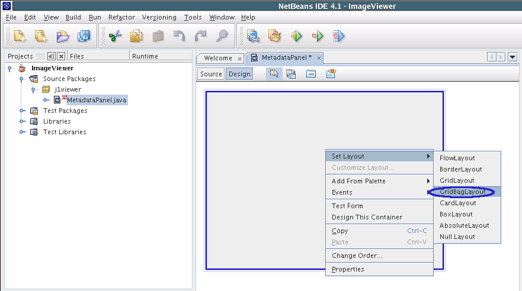 Fig 3-5: Setting the layout to GridBagLayout |
3. Adding borders
In the Design window, click on the MetadataPanel
The Properties window should now show the JPanel properties of MetadataPanel
Look for the border property in the Properties window.
Click on the correspoding ... button to launch the customizer dialog.
|
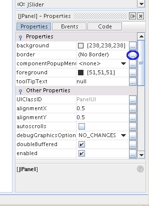 Fig 3-6: Launching border property dialog |
Select TitledBorder
Type in the value 'Meta Information' for the Title property
|
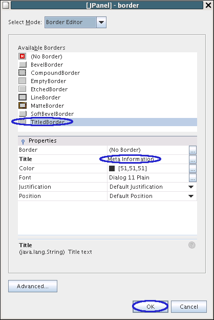 Fig 3-7: Selecting TitledBorder and customizing title text |
Click OK
4. Adding Swing widgets to the MetadataPanel
Click on JLabel in the Palette to select it.
|
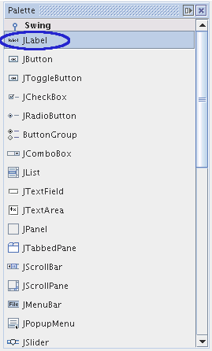 Fig 3-8: Select JLabel from palette |
Click on the MetadataPanel in the editor.
A label widget will now be added to the MetadataPanel. This is labelled jLabel1. You will notice that the Palette does not retain state after the chosen Swing component is added to a container. By design, you have to explicitly select a component each time you want to add it from the Palette. This minimizes the occurences of accidentally adding a component, or adding wrong components.
Add another JLabel (jLabel2).
Click on jLabel1.
Find the text property in the Properties window.
Change the value from jLabel1 to 'Image Name:'.
|
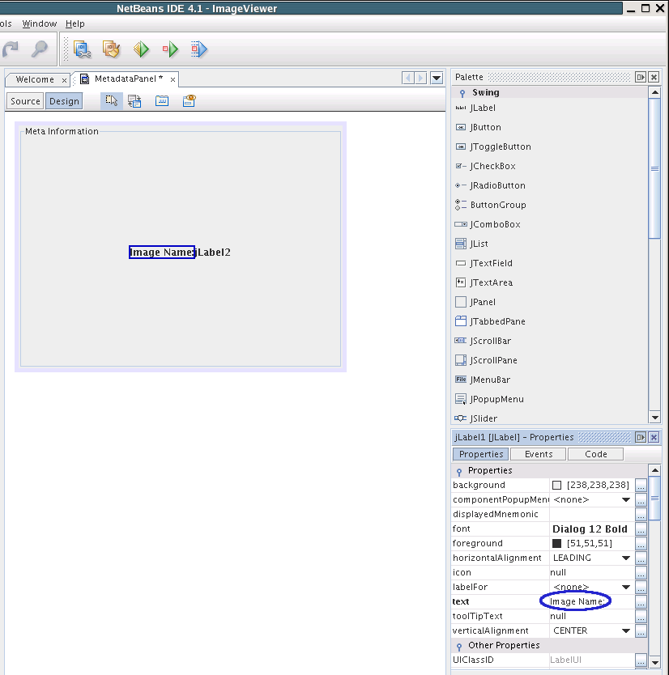 Fig 3-9: Changing jLabel1's text property to "Image Name:" |
Similarly change the text for jLabel2 to '* filename goes here *'.
5. Using GridBagLayout Customizer
Right click on the MetadataPanel in the editor and select Customize Layout...
|
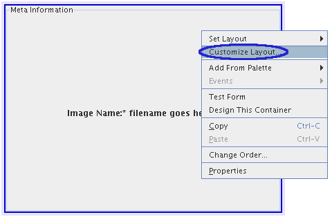 Fig 3-10: Launching the "Customize Layout..." dialog |
Select jLabel1 and click on the East button () in the Anchor group of buttons.
You will know you have the right button when you move your mouse pointer there and a tooltip showing 'East' pops up.
|
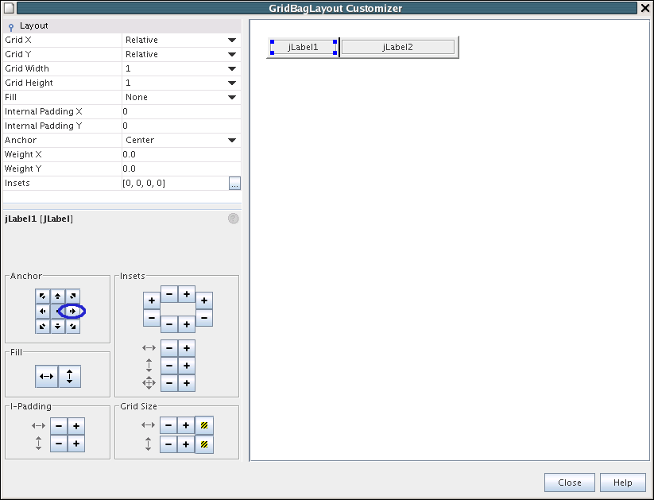 Fig 3-11: Anchoring jLabel1 to the East |
Add some space between jLabel1 and jLabel2. Select jLabel2 and click on the left plus button () 3 times in the Insets group fo buttons.
This is the Left +1 insets button, you can confirm it by moving the mouse pointer there and checking that the tooltip shows Left +1.
Also click the Horizontal Fill () and Vertical Fill () buttons in the Fill group of buttons for jLabel2.
You will know the fill buttons are activated when they display a deeper hue.
|
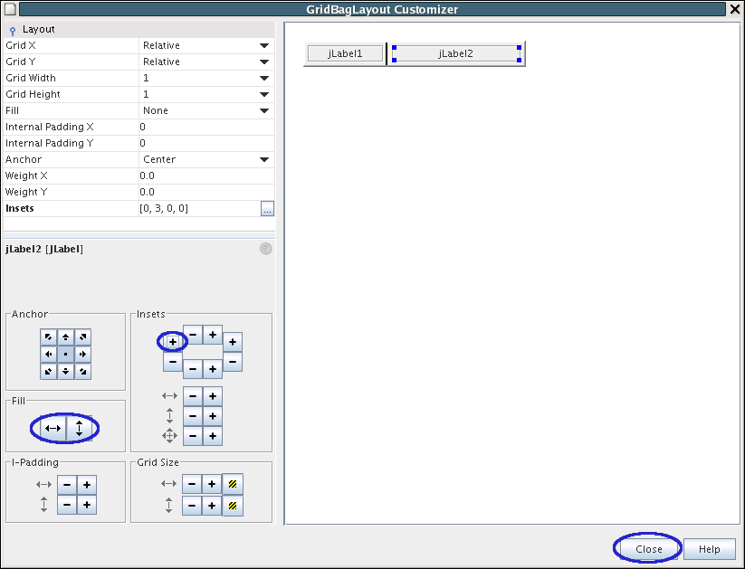 Fig 3-12: Customizing jLabel2 with insets on the left, horizontal and vertical fill. |
Click Close
5a. Optional: Adding an additional JLabel and JTextField
NOTE: Ignore the layout when you are adding the components below, you will take care of their position later.
Add a JLabel (jLabel3) to the MetadataPanel. Set the following property:
|
Property |
Value |
|
text |
Photographer: |
Add a JTextField (jTextField1) to the MetadataPanel. Set the following properties:
|
Property |
Value |
|
columns |
20 |
|
text |
<empty string> |
|
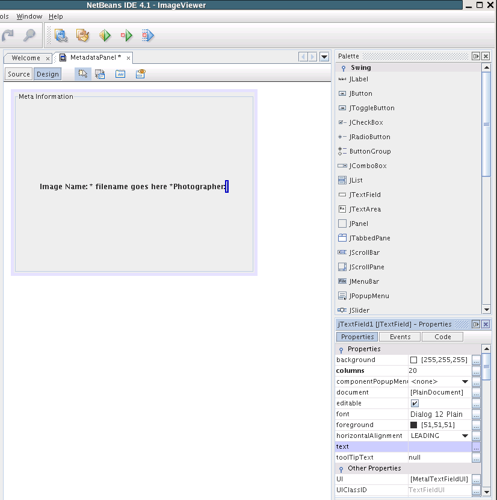 Fig 3-13: NetBeans display after completing Step 5a |
6. Using GridBagLayout Customizer again (only if you did Step 5a, otherwise jump to Step 6a or Step 7)
Right click on the MetadataPanel in the editor and select Customize Layout...
Drag jLabel3 to the grid cell directly under jLabel1.
Similarly drag jTextField1 to the cell directly under jLabel2
|
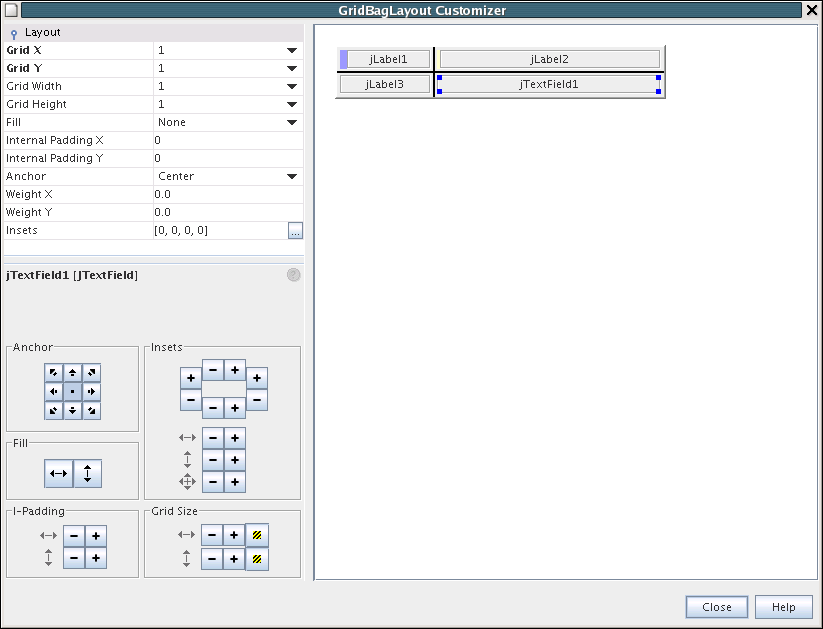 Fig 3-14: Using GridBagLayout Customizer to get desired results |
Anchor jLabel3 to East
Horizontal and vertical fill jTextField1
Add 3 Left +1 insets to jTextField1
Click Close
6a. Optional: Adding more labels (we suggest you at least add Date: so Step 7's results are more obvious.
Add the
following labels to the MetadataPanel: Date:,
Category:, Type:, Rating: and Comments:
Align
all the JLabels in the first column under Image Name: as
shown in the snapshot below (you will have to drag them into position
one at a time).
All these JLabels should be anchored
to the East
|
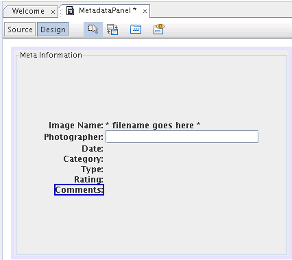 Fig 3-15: MetadataPanel after adding 5 more JLabel's |
7. Using multiple layouts (if you skipped Step 5a or Step 6a, MetadataPanel will look different in all the following snapshots of course)
Add a JPanel (jPanel1) to MetadataPanel
Using the GridBagLayout Customizer again, position jPanel1 in the cell immediately right of the Date: label.
Hint: You learned how to launch the customizer in Step 5.
Horizontal and vertical fill jPanel1
Add 3 Left +1 insets to jPanel1
Click Close
Select jPanel1 by either clicking on MetadataPanel ... (alternative below)
|
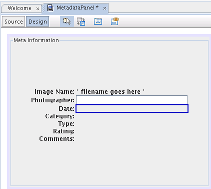 Fig 3-16: Clicking on jPanel1 on the right of Date: |
jPanel1 will be highlighted in a blue rectangle.
... -OR- clicking the jPanel1 node in the Inspector window.
|
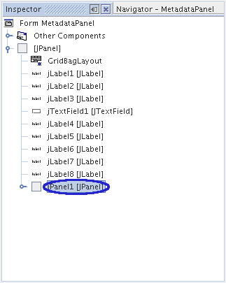 |
Right click on jPanel1 (inside the blue rectangle) and select Design This Container.
jPanel1 should now be the only panel in the editor, and it should be empty.
Set the jPanel1 layout to GridLayout.
|
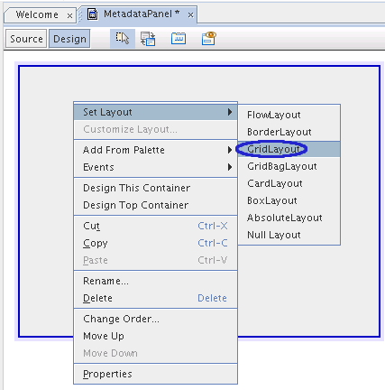 Fig 3-18: Setting GridLayout for jPanel1 |
Set the following properties on the GridLayout
|
Property |
Value |
|
columns |
3 |
|
rows |
1 |
|
horizontal gap |
3 |
|
vertical gap |
3 |
|
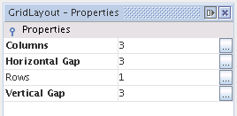 Fig 3-19: GridLayout properties |
Right click on jPanel1 in the Inspector window and select Add From Palette followed by Swing then JComboBox in the cascading menu.
NetBeans will call this jComboBox1.
|
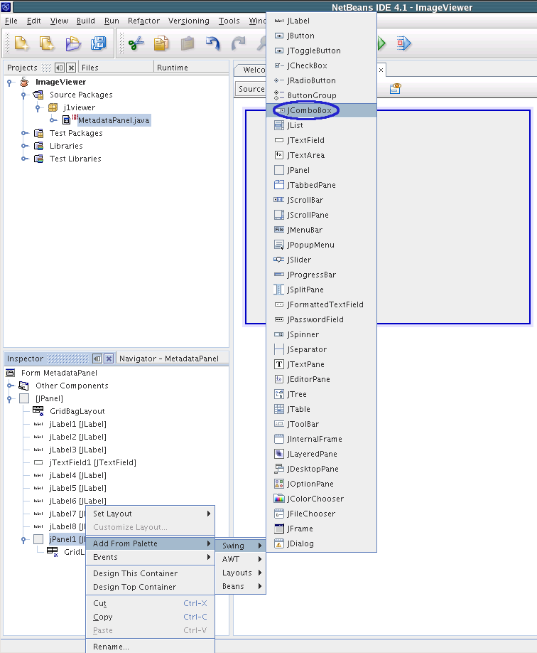 Fig 3-20: Adding a JComboBox to jPanel1 |
Add 2 more JComboBox widgets (jComboBox2 & jComboBox3) in the same manner.
You could also have clicked on JComboBox in the Palette window, then on jPanel1 but we wanted to show you an alternative.
We will use jComboBox1 to represent month, jComboBox2 for day and jComboBox3 for year.
|
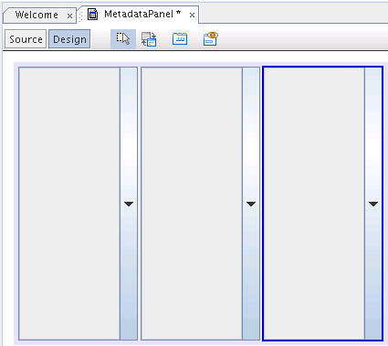 Fig 3-21: After adding 3 JComboBoxes |
8. Customizing JComboBox
Select jCombox1 and click on ... button of its model property
Type January in the Item: field.
Click on Add. January will be added to Item List window.
Add Febuary through to December in ths same manner.
|
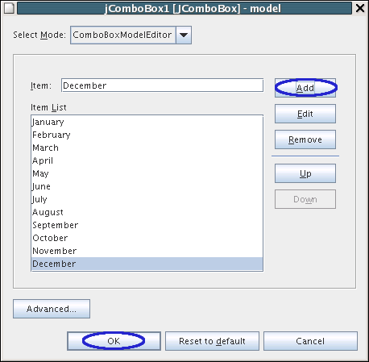 Fig 3-22: Adding JComboBox items |
Click on OK once you are done
Add 1 to 31 for jComboBox2
Add 2000 to 2010 for jComboxBox3
Now right click on jPanel1 in the Inspector window and select Design Top Container
|
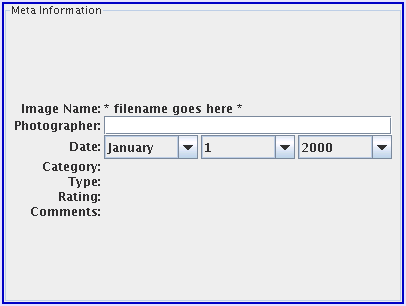 Fig 3-23: After adding items to JComboBoxes |
8a. Optional: Adding a JComboBox for Category
NOTE: You do not need to add a JPanel as you are only using one JComboBox here
Add a jComboBox (jComboBox4) and align it beside Category
Add 3 Left +1 insets to jComboxBox4
Horizontal and vertical fill jComboBox4
Add Nature, People and Places items to jComboBox4
|
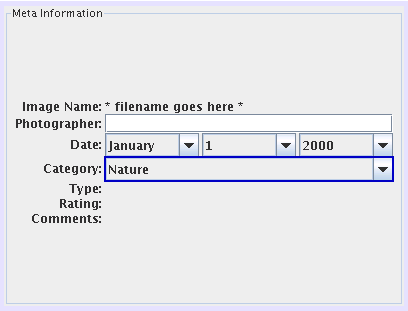 Fig 3-24: MetadataPanel after adding jComboBox4 |
9. Using JRadioButton's in a ButtonGroup
Add a JPanel (jPanel2) to MetadataPanel. Align jPanel2 beside Type
Add 3 Left +1 insets to jPanel2
Horizontal and vertical fill jPanel2
Make jPanel2 be the only Panel to appear in the editor by right clicking on it in the Inspector window and selecting Design This Container.
A faster alternative is to double-click jPanel2 within the Design window but we want to make sure you know what is going on.
Set the jPanel2 layout to GridLayout. Set the followng properties on the GridLayout:
|
Property |
Value |
|
columns |
4 |
|
rows |
1 |
|
horizontal gap |
3 |
|
vertical gap |
3 |
Right click on jPanel2 in the Inspector window (or Design window) and select Add From Palette followed by Swing followed by ButtonGroup (buttonGroup1) in the cascading menu.
You might notice that buttonGroup1 is under Form MetadataPanel and Other Components in the Inspector window.
Right click on jPanel2 in the Inspector window (or Design window) and select Add From Palette followed by Swing followed by JRadioButton (jRadioButton1) in the cascading menu.
Add 3 more JRadioButton widgets (jRadioButton2, jRadioButton3 & jRadioButton4) in the same manner.
Set the following properties on the JRadioButtons:
|
Name |
Property |
Value |
|
jRadioButton1 |
text |
GIF |
|
jRadioButton1 |
buttonGroup |
buttonGroup1 |
|
jRadioButton1 |
enabled |
<unchecked> |
|
jRadioButton2 |
text |
JPEG |
|
jRadioButton2 |
buttonGroup |
buttonGroup1 |
|
jRadioButton2 |
enabled |
<unchecked> |
|
jRadioButton3 |
text |
TIFF |
|
jRadioButton3 |
buttonGroup |
buttonGroup1 |
|
jRadioButton3 |
enabled |
<unchecked> |
|
jRadioButton4 |
text |
BMP |
|
jRadioButton4 |
buttonGroup |
buttonGroup1 |
|
jRadioButton4 |
enabled |
<unchecked> |
Set the following property on jPanel2:
|
Property |
Value |
|
border |
EtchedBorder |
Now right click on jPanel2 in the Inspector window and select Design Top Container
|
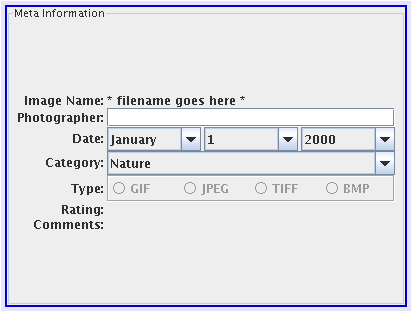 Fig 3-25: MetadataPanel after JRadioButton group |
10. Using JSliders
Add a JSlider (jSlider1) to MetadataPanel.
Align jSlider1 beside Rating:.
Add 3 Left +1 insets to jSlider1.
Horizontal and vertical fill jSlider1
Set the following properties on jSlider1:
|
Property |
Value |
|
maximum |
10 |
|
paintLabels |
<checked> |
|
paintTicks |
<checked> |
|
majorTickSpacing |
2 |
|
minorTickSpacing |
1 |
|
value |
5 |
MetadataPanel should look like this after adding jSlider1:
|
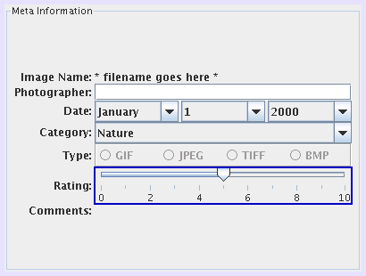 Fig 3-26: MetadataPanel after adding JSlider |
11. Using JTextArea and JScrollPane
Add a JScrollPane (jScrollPane1) to MetadataPanel.
Align jScrollPane1 beside Comments:
Right click on jScrollPane1 in Inspector window and select Add From Palette followed by Swing followed by JTextArea (jTextArea1) in the cascading menu.
Set the following property on jTextArea1:
|
Property |
Value |
|
rows |
7 |
MetadataPanel should look like this after adding jScrollpane1 and jTextArea1:
|
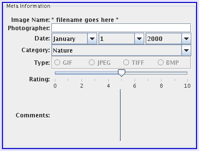 Fig 3-27: After adding JTextArea in JScrollPane |
12. Using GridBagLayout editor (part 3)
Add 3 Left +1 insets to jScrollPane1
Horizontal and vertical fill jScrollPane1
Extend jScrollPane1 downward by clicking +1 Row in Grid Size. Do this 2 more times
|
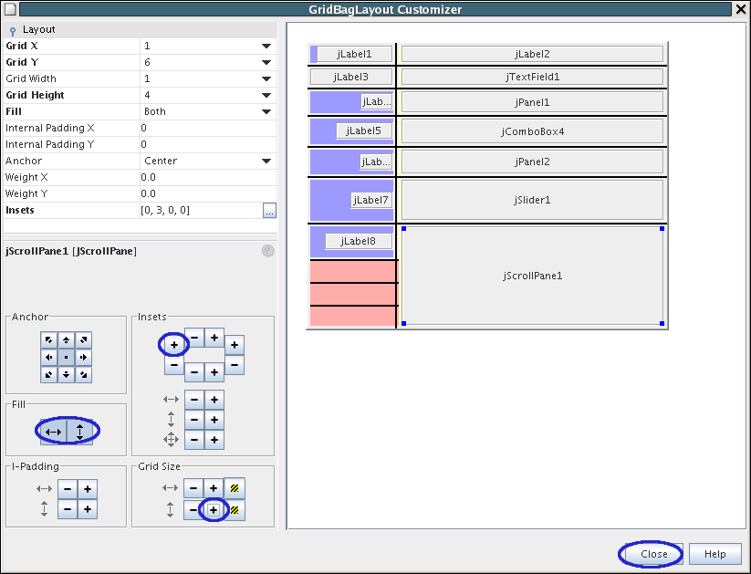 Fig 3-28: Adjusting jScrollPane1 in the GridBagLayout Customizer |
Click Close
|
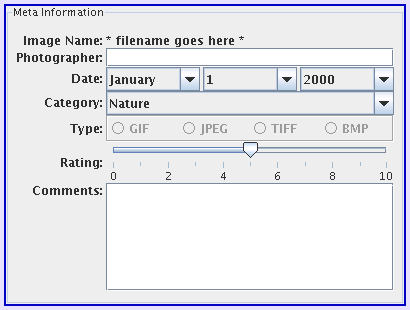 Fig 3-29: MetadataPanel after filling out JScrollPane |
13. Testing MetadataPanel
Click on the Test Form button above the editor to test MetadataPanel.
|
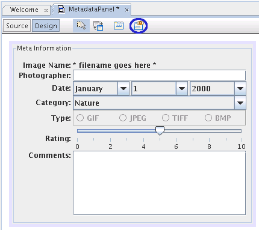 Fig 3-30: The Test Form button |
Try typing in enough text in the Comments: field to activate scrolling of the JScrollPane.
13a. Optional: JPanel revisited and JButton introduced
|
Fig 3-31: MetadataPanel with a Modify button |
Use the FlowLayout Luke!
|
||
See if you can figure out how to add the Modify button to the MetadataPanel.
Summary:
You
have just created the MetadataPanel comprising these Swing
components: JPanel, JLabel, JTextField,
JComboBox, ButtonGroup, JRadioButton, JSlider,
JScrollPane, JTextArea and JButton. You have
also learned how to use the GridBagLayout, GridLayout
and FlowLayout layout managers. As you've experienced, you
have fine-grained control over the layout of every component using
the the layout customizers.
Solution
return
to the top
Learning goals of this exercise:
In this
exercise, you will learn to customize various aspects of GUI
behavior.
Background information:
You've
experienced how the tooltips in the NetBeans UI helped you figure out
what the various widgets in an unfamiliar interface do. The first
thing you will learn in this exercise is how easy it is to add
tooltips to any component. We will also guide you through: adding an
image to a button, configuring a focus trail, creating enumerated
types and Java Bean properties to match your ocmponents, wiring your
components to the Bean properties with source code, correcting
'import' errors with assistance, adding event handling methods to a
component, and finally, adding a component to the Palette as a Bean.
Steps to follow:
1. Adding Tooltips
Select jLabel2 ("* filename goes here *")
Look for the toolTipText property in Properties and type in the value 'image filename'
|
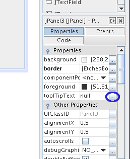 Fig 4-1: Tooltip property |
Set tooltips for the following:
|
Name |
TooltipText |
|
jTextField1 |
Photographer's name |
|
jLabel4 |
Capture date |
|
jComboBox1 |
Month |
|
jComboBox2 |
Day |
|
jComboBox3 |
Year |
|
jComboBox4 |
Photo classification |
|
jLabel6 |
Image format |
|
jSlider1 |
My rating for this photo: 0(bad) - 10(good) |
|
jTextArea1 |
Comments |
|
jButton1 |
Save changes |
You can validate all the tooltips by clicking the Test Form button and placing the mouse pointer over those components.
|
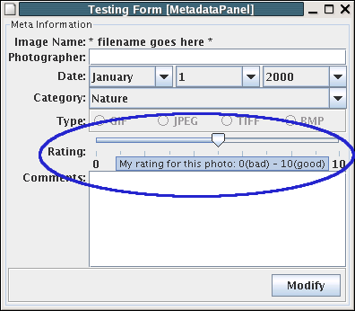 Fig 4-2: Example: tooltips when pointer is on jSlider1 |
2. Adding images (only if you did the optional Step 13a of Exercise 3)
Select jButton1 and set the icon property. Select the File radio button
Click the Select File... button and set the icon image to <LAB_ROOT>/resources/Save24.gif
|
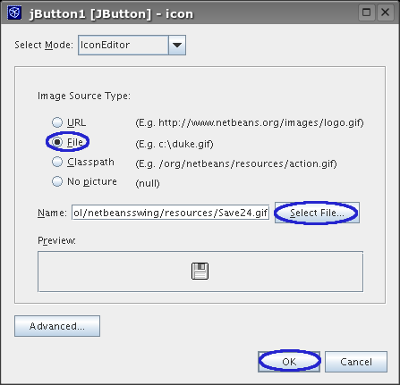 |
Click OK and MetadataPanel should now look like this:
|
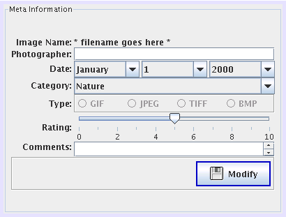 Fig 4-4: After adding an image icon to jButton1 |
NOTE: Often, resources such as icon images such as this are located in the classpath to facilitate packaging. For this lab, we have chosen the easy way out but want you to note that absolute file paths are not portable. See related link in Resouces.
2a. Optional: Focus traversing
NOTE: this is deprecated but still works. There is a new focus traversal architecture which we won't cover here.)
Select jTextField1 and find nextFocusableComponent in the Properties window.
On the nextFocusableComponent combobox, select jComboBox1.
|
|
Create the following 'focus trail': (you have to skip the components you opted not to create earlier)
|
From |
To |
|
jTextField1 |
jComboBox1 |
|
jComboBox1 |
jComboBox2 |
|
jComboBox2 |
jComboBox3 |
|
jComboBox3 |
jComboBox4 |
|
jComboBox4 |
jSlider1 |
|
jSlider1 |
jTextArea1 |
|
jTextArea1 |
jButton1 |
|
jButton1 |
jTextField1 |
You can test focus traversal by clicking Test Form, then use the <Tab> key on your keyboard to move focus from jTextField1 to jTextArea.
4. Creating enumerated types
Right click on j1viewer in the Projects window and select New followed by File/Folder... on the cascading menu
Then on the New File dialog, select Java Classes followed by Java Enum
|
|
Click Next >
Enter Categories for the Class Name:
|
|
Click Finish
Expand Categories.java followed by Categories
Right click on Constants and select Add Constant...
|
|
Type Nature for the Name: of the new constant
|
|
Click OK
Add the following 2 more constants: People and Places.
|
Fig 4-10: Completed enumerated values |
As you can guess, these enumerated types match the Categories ComboBox that we created earlier for classifying images.
Create another enumerated type call ImageFormat with the following constants: GIF, JPEG, TIFF and BMP.
This will match the JRadioButtons we created earlier to denote image Type:.
5. Exposing MetadataPanel as a JavaBean (adding properties)
Expand the Source Packages node, then j1viewer, the MetadataPanel.java, then MetadataPanel in the Projects window
Right click on Bean Patterns and select Add followed by Property
|
|
The property dialog box will be displayed.
|
|
Set the following values in this specified order:
|
Field |
Value |
|
Name |
imageFilename |
|
Type |
String |
|
Generate Return Statement |
<unchecked> |
|
Generate Set Statement |
<unchecked> |
|
Generate Field |
<unchecked> |
Click OK and the Project window should look like this under the Bean Patterns node:
|
|
Create the following properties in the above mentioned way:
|
Property name |
Type |
|
photographerName |
String |
|
captureDate |
java.util.Date |
|
category |
j1viewer.Categories |
|
imageFormat |
j1viewer.ImageFormat |
|
ratings |
int |
|
comments |
String |
6. Adding code to properties
To add source code, click on the MetadataPanel.java tab and the Source button
|
Fig 4-14: The source code for MetadataPanel |
Add the following code (method bodies in blue) to the properties you have created above.
Stating the obvious, if you had skipped creating any widgets and the corresponding Bean properties, skip those methods.
|
public String getImageFilename() { |
Code-01: Getter and setter methods for the properties we added to MetadataPanel
NOTE: There will be some classes that are reported as undefined (eg. GregorianCalendar). You can see the squiggly red line under the erroneous statements. Look for GregorianCalendar in the editor within the getCaptureDate() and setCaptureDate() methods.
Move your mouse pointer over the red box with a diagonal white cross () or the squggly red line and you will find out the exact error is.
Consistent with how a lot of other functions in NetBeans work, a tooltip will appear providing the error details.
|
Fig 4-15: The cause of each error is displayed within a tooltip/balloon |
Click on the GregorianCalendar keyword in the source code and type Alt-Shift-i
The Import Class dialog will launch showing a match to java.util.GregorianCalendar
Select the Import Package radio button instead and click OK
|
|
Click OK
You might want to try introducing various syntax errors into the source code to try NetBeans diagnostic capabilities.
7. Adding a method
Expand the Source Packages node in the Projects window, then j1viewer then MetadataPanel.java then MetadataPanel
Right click on Methods and select Add Method...
|
|
The following dialog box will be displayed. Type addActionListener in the Name field
|
|
Click on Add in the Parameters tab.
|
|
Enter the following values:
|
Field |
Value |
|
Type |
ActionListener |
|
Name |
listener |
Click OK to dismiss the Enter Method Parameter dialog
Then click OK to dismiss the Add New Method dialog
|
|
Expand the Methods node and look for addActionListener method. Double-click on it; this will cause the editor to display the method.
|
|
There is an error with the addActionListener() method. Try to fix it before proceeding
Add the following code (in blue) to the addActionListener() method body:
|
public void
addActionListener(ActionListener listener) { |
Code-02: Wiring it up so that the actionPerformed event for jButton1 will be handled by anyone listening on MetadataPanel
Hint: You will have to import another package just like you did in Step 6 in order to clear an error.
8. Adding MetadataPanel to the component palette
Expand Source Packages followed by j1viewer followed by MetadataPanel.java followed by MetadataPanel in the Projects window.
Right click on MetadataPanel.java and select Tools followed by Add to Palette...
|
|
Adding a component to the palette is the recommended way to reuse Swing components in NetBeans. It facilitates cleaner integration into future projects than copying of source code followed by the necessary refactoring.
Select Beans
|
|
Click OK
Verify that MetadataPanel has been added to the Palette window
If you are viewing source code, you can bring back the Palette by clicking the Design button
Scroll down to the bottom and expand the Beans node and you should see MetadataPanel
|
|
Summary:
You
have learned how to modiy the behavior of GUI components. You added
tooltips to the components in MetadataPanel, then you added an
image to a button, followed by configuring the focus traversal path
of the components. You created enumerated types and properties that
corresponded to the values of your components, and hooked up getters.
setters and event handlers. Finally, you added MetadataPanel
to the Palette as a Bean so that it can be easily reused by this and
other applications.
Solution
return
to the top
Learning goals of this exercise:
In
this exercise, you will learn how to combine Swing composite widgets
into applications. You will also learn how to refactor existing code
into your application.
Background information:
Very
few software projects start development from scratch where the
programmers don't bring over any code they had developed for other
purposes, or incorporate open source or commercial libraries. We will
now show you how to bring existing source code into your project. And
in the optional Exercise 7, we will show
you how to use existing jar files.
Although it is not really
difficult for you to develop the thumbnail table and the image panel,
it involves lots of low-level details which take up significantly
more time, so we have pre-built them for you to incorporate as source
code. In previous exercises, you had created and customized the
MetadataPanel all by yourself. In this exercise, you will copy
in and refactor ImagePanel to
display scale-sized image and ImagesTableModel
to load the directory of images as thumbnails, then you will
create the top-level ImageManager application by yourself,
incorporating all the other components.
To reinforce your
learning, we have deliberately chosen a much less graphical style in
the guidance compared to previous exercises. We hope it will help you
to recall how to perform the required actions. But just in case you
forgot, we also left a few hints for the more complex
operations.
Steps to follow:
1.
Copying additonal files into the project
Right click on the top most node (ImageViewer, MyImageViewer or whatever you named it in Exercise 2) in the Projects window and select Properties.
Note the location of the project sources (Project Folder) on the Project Properties dialog.
|
Fig 5-1: Project Properties dialog showing Project Folder location |
Click OK to dismiss this dialog once you've noted the location of <PROJECT_FOLDER>
Now (using your usual means, GUI or command line) copy ImagePanel.java, ImagePanel.form and ImagesTableModel.java from <LAB_ROOT>/files to <PROJECT_FOLDER>/src
(Reminder: <LAB_ROOT> is where the lab zip file was unzipped before Exercise 0)
Expand the Source Packages node in the Projects Window.
A new node, <default package>, should appear above the j1viewer package we created in Step 3 of Exercise 2.
Expand the <default package> node
Click on ImagePanel.java to select it
Hold down the Shift key and click on ImagesTableModel.java. but DO NOT RELEASE the mouse button
Release the Shift key (Shift enables multiple selections)
Now drag the 2 highlighted files over to the j1viewer node and release the mouse button there
A dialog (called Refactor Code for Moved Class) will now appear.
|
Fig 5-2: Refactor Code for Moved Classes dialog |
Check Preview All Changes and click on Next >.
The Refactoring window will open below.
|
Fig 5-3: Refactoring window showing changes |
Go through the list of changes in the window.
Once you are satisfied, click on Do Refactoring button to perform the class move.
Now add ImagePanel.java to the Beans palette.
Hint: You did the same thing for MetadataPanel.java in Step 8 of Exercise 4.
2. Creating the ImageManager application
In the Projects window, right click j1viewer
Select New followed by JFrame Form... in the cascading menu.
Type ImageManager in the Class Name: field
Click Finish
The Design window should now show an empty rectangle representing the ImageManager panel, similar to when you just created the JPanel Form in Step 1 of Exercise 3.
3. Adding Menubar and Menuitem
Select JMenuBar from the Palette window and click on the ImageManager panel in the editor. You will notice that a menubar would have been added.
Click on the highlighted Menu object in the panel and change its text property to File.
In the Inspector window, expand Form ImageManager followed by [JFrame] followed by jMenuBar1[jMenuBar].
Right click on jMenu1[JMenu] and select Add followed by JMenuItem.
Add 2 more items, a JSeperator and a JMenuItem (in that specific order) to jMenu1.
You can actually do this from the Design window as well but we wanted you to be familiar with the Inspector window as it is sometimes easier to do it from here when the UI has many components.
|
Fig 5-4: Inspector window after adding items |
Now click on jMenuItem1 in the Inspector window. Change jMenuItem1's text property to Open....
Similarly change jMenuItem2's text property to Exit.
4. Splitting the ImageManager window and putting all the components together
Select JSplitPane from the Palette window and click on the ImageManager panel.
The main JFrame panel will now contain a narrower left button and a wider right button.
Select JScrollPane from the Palette and click on the left pane labelled left button.
This will create a node called jScrollPane1 under jSplitPane1 in the Inspector window.
Select JTable from the Palette and click inside jScrollPane1 (the left portion of the split pane).
Check the cellSelectionEnabled property on the JTable (jTable1).
Select another JSplitPane and click on the right pane labelled right button.
This will create a node called jSplitPane2 under jSplitPane1 (again in the Inspector window).
Change the orientation property of jSplitPane2 from HORIZONTAL_SPLIT to VERTICAL_SPLIT.
Select JScrollPane from the Palette window and click on the left button (now at the top right).
This will create a node called jScrollPanel2 under jSplitPane2.
Select ImagePanel from the Beans part of the Palette window and add it to jScrollPane2.
This will create a node called imagePanel1 under jScrollPane2.
NOTE: If you have trouble adding the ImagePanel, try compiling it via the Project window first! The same may be true of MetadataPanel in the next step. Adding a component to the Palette does not automatically compile it.
Select MetadataPanel from the Beans part of the Palette window and click on right button.
Ths will create another node called metadataPanel1 under jSplitPane2.
The Inspector and Design windows should look like this now:
|
|
Fig 5-6: Design window |
5. Setting model for JTable
Select jTable1 from either the Inspector or Design window.
Find the model property in the Properties window. Click on the ... button to bring up the model editor.
Select Form Connection from the Select Mode combo box.
Select the User Code radio button and type the following code in the text area:
|
new ImagesTableModel() |
Code-03: User provided code that defines the table model, the data that the JTable displays
|
Fig 5-7: JTable model property dialog |
Click OK
6. Testing ImageManager
Click on the Test Form button above the Design window to test ImageManager.
6a. Optional: One touch expandability
Try enabling the oneTouchExpandable property on both jSplitPane1 and jSplitPane2.
|
Fig 5-8: After enabling one touch expandability |
Save your work and retest ImageManager using Test Form.
Try clicking on the various blue arrow glyphs ( or ) several times.
Summary:
You
have now successfully created the entire visible portion of the UI.
And you achieved this by combining and configuring most of the UI
components yourself! We only supplied the ready-made ImagePanel which
comes ready to render images due to time
constraints.
Solution
return
to the top
Learning goals of this exercise:
In this
exercise, you will learn how to program the event handlers for your
application components.
Background
information:
Traditional GUI programming involved
non-trivial hand-coding of event handlers so that the right thing
would happen when the user manipulates a component. Modern IDEs like
NetBeans take most of the the complexity away by letting you
associate event handlers to components in a visual intuitive (for
programmer's anyway) manner. This exercise will walk you through the
use of JFileChooser, showing how to incorporate event handling
code that has to execute when an action (file or directory selection)
is performed on it. We will also guide you to adding an event handler
for selection of the Exit JMenuItem. And most
importantly, you will get to add the valueChanged() event
handling code for ListSelectionEvent, this tells the
application what to do when an item within a collection is selected.
For our ImageViewer application, when a thumbnail image is clicked
(selected) we want the image panel to display the image in its actual
size.
Steps
to follow:
1. Adding a File Chooser
In the Inspector window, expand Form ImageManager.
Right click on Other Components and select Add From Palette followed by Swing followed by JFileChooser in the cascading menus.
|
|
Set the fileSelectionMode property of JFileChooser you have just added to DIRECTORIES_ONLY.
|
|
2. Selecting the project's main class
In the Projects window, right click on the top most node and select Properties.
|
|
Select Run under Categories: on the left.
Click on the Browse button on the right of the Main Class field.
j1viewer.ImageManager will be displayed in the Browse Main Class dialog.
Click on the Select Main Class button to select that as the main class.
|
|
You may wish to increase the heap size. Eg. type '-Xms512m -Xmx512m' in the VM Options text box to set the heap size of the running VM to be 512MB.
Click OK
|
|
In the Inspector window, expand the Form ImageManager node followed by [JFrame] followed by jMenu1[jMenu]
Right click on jMenuItem1 and select Events followed by Action followed by actionPerformed in the cascading menu.
|
Fig 6-6: Adding event to menu item |
Add the following code snippet to the event handler.
|
if
(jFileChooser1.showOpenDialog(this) ==
JFileChooser.APPROVE_OPTION) { |
Code-04: JFileChooser event handling code that constructs a new ImagesTableModel object using the chosen directory path
And add the following method immediately after the jMenu1ActionPerformed() method above
|
private void setTableCellSize(int
thumbnailSize) { |
Code-05: Setting the row height and column width of the JTable appropriately
4. Building the project
Right click on the top most nodet in the Projects window and select Build Project.
|
|
You may ignore the following messages (from creating the focus trail) in the Output window:
|
Note: .../ImageManager/src/j1viewer/MetadataPanel.java uses
or overrides a deprecated API. Fig 6-8: Output window warning messages |
If you hadn't already corrected some 'import errors' after Step 3, you have to do so now.
Hint: JFileChooser is in the javax.swing package, File is in the java.io package, TableModel and TableColumnModel are in the javax.swing.table package.
Right click on the top most node again, and select Run Project.
|
|
When the ImageViewer window appears, select File followed by Open... and open the <LAB_ROOT>/resources/images directory. Thumbnails of all the images in that directory should appear in the table on the left.
We included 60+ sample images (10MB) in <LAB_ROOT>/resources/images. The application wll freeze for 10 to 30 seconds (depending on your system) while the images are loading. We will discuss some possible ways to overcome this in Exercise 7.
Be mindful of which directories you choose to open on your own computer at home, those with thousands of images will naturally consume a lot of memory. If you didn't set your -Xmx VM option high enough or computer has insufficient swap space (paging space for Windows), some thumbnails won't be generated and you should see some error 'insufficient memory' message in the Output window.
4a. Optional: Handling Exit menu event.
Handle the Exit (jMenuItem2) event. Add the following code snippet appropriately:
|
setVisible(false); |
Code-06: Event handling code that will cause the GUI application to disappear and the process to exit
5. Displaying selected images
Click on the Source button of ImageManager. The editor will switch from the GUI view to the code view.
Implement ListSelectionListener for ImageManager.
You will have to fix 'import errors' as before.
The ListSelectionListener interface has 1 method called valueChanged(). Add the following code for it:
Hint: ListSelectionListener is in the javax.swing.event package.
|
public void
valueChanged(ListSelectionEvent lsEvt) { |
Code-07: Event handling code that is invoked whenever a thumbnail is selected, it gets the ImagePanel to re-render with the chosen image
Add the following lines in ImageManger's constructor, after initComponents(); :
|
jTable1.getColumnModel().getSelectionModel().addListSelectionListener(this); |
Code-08: addListSelectionListener() registers the current object's (ImageManager's) valueChanged() method for the ListSelectionEvent.
Rebuild and rerun the application to make sure it works to your satisfaction. You can use the images in the <LAB_ROOT>/resources/images or <LAB_ROOT>/index_files/nb_images directories to test the ImageManager application.
Summary:
You
have built a Swing application in the NetBeans 4.1 IDE using a
combination of techniques:
Designing a UI component from scratch
Modifying component behavior through property editors
Modifying component behavior by editing source code
Adding a UI component to the Palette as a Bean
incorporating a UI component into another from the Beans available in the Palette
Incorporating a UI component through refactoring existing code
Congratulations!
You have successfully completed the "Developing Swing
Applications with NetBeans 4.1 IDE" Hands-on lab.
Please send your feedback to
handsonlab-netbeansswing@yahoogroups.com.
We hope you have enjoyed the lab. There were many capabilities of NetBeans and Swing that we didn't even mention due to time constraints, so we have packaged an extra exercise for you to discover some of them at your leisure.
Learning goals of this exercise:
In this exercise you will learn:
To add additional Jars to NetBeans' compile and execution enviroment
To use Swing's Pluggable Look and Feel (PLAF) capability.
To incorporate the Skin Look and Feel (SkinLF) from L2FProd.com
To internationalize an application
Generate javadocs
Improve several usability aspects of the application
Background information:
Swing had supported
PLAF from the very beginning so that applications could selectively
sport a native L&F, or a uniquely uniform L&F across
platforms. We found out that L2FProd's SkinLF had a nice collection
of skin theme packs so we decided to showcase it here for you to have
fun with. If you are interested in customizing some visual aspects of
your application, creating a skin theme pack may be a much easier
alternative than a complete L&F.
Many developers need to
write their applications for international use, we show how NetBeans
has built-in support for this such that you can write your
application for one language, then convert it to remove all hardcoded
strings later. And for developers who build components or libraries
for others to use, or that their organizations need to maintain for
some time, we just point out that Javadoc generation can be invoked
for an entire project in a single action.
Steps to
follow:
1. Adding additional Jars
Right
click on the project (topmost) node, right click and select
Properties
When the Project Properties dialog
appears, select the Libraries node, make sure the Compile
tab is selected.
Click on Add JAR/Folder button. Browse to
<LAB_ROOT>/files directory and add skinlf.jar.
|
|
Perform the same steps
(adding skinlf.jar) for the Run tab (just right of
Compile).
Click OK when done.
If you had
jumped here directly from Exercise 1, then
click here to go back and resume it.
2. Making MyImageManager skinnable.
Copy
and refactor ThemeSelectionBean.java and
ThemeSelectionBean.form from <LAB_ROOT>/files
into the j1viewer package.
Reminder: You did something
very similar in Step 1 of Exercise
5.
This bean uses L2FProd.com's Skin look and
feel.
You are to add an addtional menu item to File
menu as shown in the diagram below
|
|
When you select Change Skin... the following dialog box should appear.
|
|
Select
one of the theme packs and click OK.
Use the following
code snippet appropriately to help you initialize
ThemeSelectionBean.
Remember to substitute <LAB_ROOT>
with the directory appropriately.
|
//this refers to MyImageManager
which is a JFrame |
Code-08:
ThemeSelectionBean initialization.
The
following figure shows you how the application looks like after you
have change its look and feel to SkinLF with the cellshaded skin.
|
|
3. Internationalization
Expand Source Packages node. Right click on j1viewer package node and select New... followed by File/Folder
|
Fig 7-5: Invoking the New File idalog |
Select Other followed by Properties File
|
|
Click
Next >
Enter the name of the resource bundle as
shown. Click Finish when completed.
|
|
The resource bundle will appear in j1viewer node as shown.
|
|
Click
on MetadataPanel.java to set the context for
internationalization
Pull down the Tools menu, then select
Internationalization followed by Internationalize... in
the cascading menu
|
Fig 7-9: Invoking Internationalize... on MetadataPanel.java |
The
Internationalize dialog will pop up
Click on Browse...
to select the resource bundle
|
|
The NetBeans editor will simultaneously display the Source view of MetadataPanel.java
The
Select Resource Bundles dialog will appear next
Expand the
Source Packages node followed by j1viewer then select
the resources_fr.properties file you just created
Click OK
to dismiss this dialog
|
|
Click Replace back on the Internationalize dialog to process all the hardcoded strings
|
|
The Internationalize
dialog will iterate through all hardcoded strings it finds in
MetadataPanel.java
The Source view in the main
NetBeans window will correspondingly highlight each hardcoded
string
You have to decide whether to Replace or Skip
each string
For example, image file format strings like GIF, JPEG,
TIFF and BMP don't need to be localized.
Note: The
Internationalize tool may not be able to pick up all
strings so you should inspect the source manually.
For
simplicity, we suggest you continuously click Replace until
you see the "No more hard-coded strings found."
|
|
At this point, click Close to dismiss the Internationalize dialog.
Click the resources_fr
tab to edit the generated resource bundle.
Replace each string
value with the appropriate language.
We have shown an example
French translation below.
|
Fig 7-14: Modifying the resource bundle with the translated strings |
Test
the ImageManager application again to verify that the strings
in the resource bundle are being used now.
|
Fig 7-15 ImageViewer app with the MetadataPanel localized to French |
If you merely
translated the same strings as we did as shown above, you'll notice
that there are other strings in MetadataPanel like the
titled border and all the constants in the comboboxes that we did not
translate yet. Some of these strings reside in other source files so
the best approach for your projects is to use the
Internationalization Wizard to go through all your
source files. Furthermore, once software has been internationalized,
it is often localized into more than one other language, so the more
scalable approach of using multiple resource bundles is required. We
just wanted to introduce you to this feature and encourage you to
follow the Internationalization link listed in the resources.
4. Generating Javadoc
Right click on project node, select Generate Javadoc for Project
|
|
When
the source files have been processed and the Javadoc documentation
generated, a browser window should be launched showing the jviewer
package:
|
Fig 7-16: Generated Javadoc for the j1viewer package |
5. There are some quirks about the ImageViewer application you have just created, some of these are:
The JTable is fixed at 3 columns. It should adjust the number of columns for thumbnails/filenames appropriately when the splitpane or frame is resized. It should rearrange itself to a minimum width of 1 column when the vertical splitpane is collapsed towards the left. It should also ideally rearrange itself to use more columns as more space is made available, up to the point where all image thumbnails are visible. Where there is excessive space available (no scrolling required), the ratio of rows to columns should be somewhat proportionate to the JTable dimensions.
Thumbnail loading is single-threaded and freezes the UI. Applications that perform lots of I/O should ideally be multithreaded. And if there are long-running activities that inherently hold back all other actions, there should be a clear indicator like the pointer glyph changing to an hourglass. And in the ideal case, a relatively accurate progress bar should be shown.
When a large image is selected, it may take some time to be rendered. There should be a message telling the user something is happening.
The thumbnail image size is fixed. Thumbnail sizes should ideally be configurable, or even changeable on-the-fly to cater to each user's personal preferences.
Selected images appear at the top left corner of the ImagePanel. They should instead be centered within the ImagePanel when there is excessive width and/or height.
Some people prefer image filenames instead of thumbnails. Users should be able to toggle between image thumbnails and filenames in the JTable.
There is no UI feedback when a thumbnail has been selected. There should be some clear feedback on the thumbnail table, like highlighting the border of the
You can only view one directory of images at any time. Most similar applications allow the user to view sets of images from multiple directories. There are many possible schemes you can implement but at a minimum, there should be a function to clear the thumbnail view, and each Open... operation should add to the set of images that are already there.
As an example, we have implemented 5d and 5f which is depicted in this screenshot:
You can
look at the solution code to see
how this feature was implemented.
The final screenshot below shows
how the application looks when you select the Filename
view.
Notice how we have modified the tooltip to show the
thumbnail instead.
In addition, there are
several other enhancements you may want to implement:
Connect the MetadataPanel to a database so that you can actually store, recall and update image-related information. We suggest you try Hypersonic because it is 100% Java, has a small memory footprint, is fast, and is embeddable.
If you think a typical user's usage pattern is such that they will view several sets of images interchangeably and repeatedly, you will want to implement some caching scheme so that the loading and rendering of thumbnail images is accelerated on subsequent visits.
Even though this is an image viewing rather than image editing application, you may want to implement rotation and scaling on the current image as those are frequently used operations.
Summary:
Even
though you have learned a lot about NetBeans and Swing in the last
few hours, there are MANY more NetBeans features that we have not
even mentioned. We hope the time you have put into this lab has whet
you appetite for more Swing development using NetBeans, and perhaps
for using NetBeans to develop applications for your mobile phone and
enterprise services as well. Please check out the resources
we mentioned earlier.
Solution
return
to the top
Updated: June 22nd 2005
|
|
Company Info | Contact | Copyright 2005 Sun Microsystems